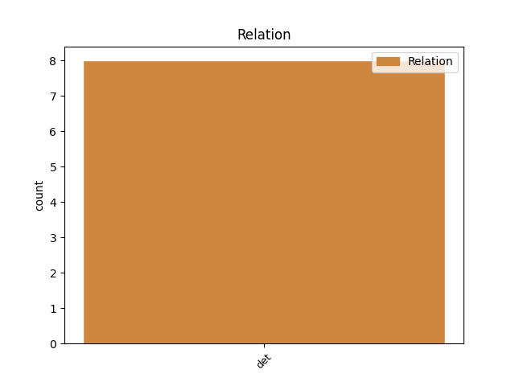
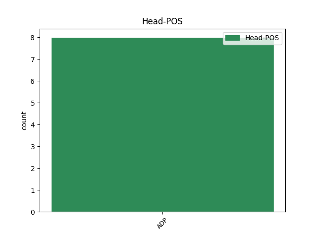
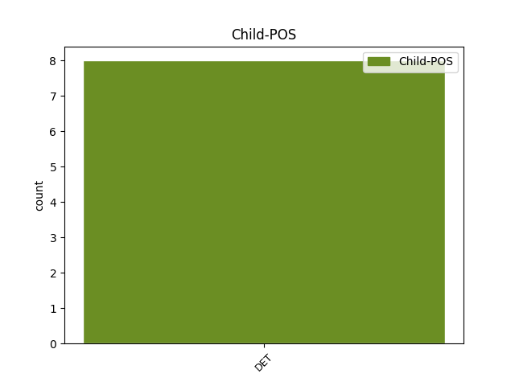

Distribution of features within this leaf



No agree examples found.
Disagree Examples:
1 Semnează _ _ _ _ 0 _ _ _
2 versuri _ _ _ _ 0 _ _ _
3 G. _ _ _ _ 0 _ _ _
4 Bacovia _ _ _ _ 0 _ _ _
5 ( _ _ _ _ 0 _ _ _
6 Plumb _ _ _ _ 0 _ _ _
7 de _ _ _ _ 0 _ _ _
8 iarnă _ _ _ _ 0 _ _ _
9 , _ _ _ _ 0 _ _ _
10 Nevroză _ _ _ _ 0 _ _ _
11 ) _ _ _ _ 0 _ _ _
12 , _ _ _ _ 0 _ _ _
13 Tudor _ _ _ _ 0 _ _ _
14 Arghezi _ _ _ _ 0 _ _ _
15 și _ _ _ _ 0 _ _ _
16 proză _ _ _ _ 0 _ _ _
17 Emil _ _ _ _ 0 _ _ _
18 Isac _ _ _ _ 0 _ _ _
19 ( _ _ _ _ 0 _ _ _
20 Din din ADP Spsa AdpType=Prep|Case=Acc 0 _ _ _
21 brădetul _ _ _ _ 0 _ _ _
22 lui lui DET Tf-so Case=Dat,Gen|Definite=Def|Number=Sing|PronType=Art 20 det _ _
23 Iancu _ _ _ _ 0 _ _ _
24 ) _ _ _ _ 0 _ _ _
25 . _ _ _ _ 0 _ _ _
1 Fujiyama _ _ _ _ 0 _ _ _
2 nu _ _ _ _ 0 _ _ _
3 poate _ _ _ _ 0 _ _ _
4 explica _ _ _ _ 0 _ _ _
5 diferențele _ _ _ _ 0 _ _ _
6 culturale _ _ _ _ 0 _ _ _
7 care _ _ _ _ 0 _ _ _
8 -i _ _ _ _ 0 _ _ _
9 fac _ _ _ _ 0 _ _ _
10 pe _ _ _ _ 0 _ _ _
11 japonezi _ _ _ _ 0 _ _ _
12 - _ _ _ _ 0 _ _ _
13 tineri _ _ _ _ 0 _ _ _
14 și _ _ _ _ 0 _ _ _
15 bătrâni _ _ _ _ 0 _ _ _
16 - _ _ _ _ 0 _ _ _
17 să _ _ _ _ 0 _ _ _
18 cânte _ _ _ _ 0 _ _ _
19 acasă _ _ _ _ 0 _ _ _
20 după _ _ _ _ 0 _ _ _
21 spectacolele _ _ _ _ 0 _ _ _
22 de _ _ _ _ 0 _ _ _
23 varietăți _ _ _ _ 0 _ _ _
24 ( _ _ _ _ 0 _ _ _
25 care _ _ _ _ 0 _ _ _
26 afișează _ _ _ _ 0 _ _ _
27 versurile _ _ _ _ 0 _ _ _
28 pe _ _ _ _ 0 _ _ _
29 ecranele _ _ _ _ 0 _ _ _
30 televizoarelor _ _ _ _ 0 _ _ _
31 ) _ _ _ _ 0 _ _ _
32 și _ _ _ _ 0 _ _ _
33 la _ _ _ _ 0 _ _ _
34 baruri _ _ _ _ 0 _ _ _
35 " _ _ _ _ 0 _ _ _
36 karaoke _ _ _ _ 0 _ _ _
37 " _ _ _ _ 0 _ _ _
38 cu _ _ _ _ 0 _ _ _
39 echipament _ _ _ _ 0 _ _ _
40 profesional _ _ _ _ 0 _ _ _
41 , _ _ _ _ 0 _ _ _
42 jocuri _ _ _ _ 0 _ _ _
43 de _ _ _ _ 0 _ _ _
44 lumini _ _ _ _ 0 _ _ _
45 și _ _ _ _ 0 _ _ _
46 public _ _ _ _ 0 _ _ _
47 ; _ _ _ _ 0 _ _ _
48 în _ _ _ _ 0 _ _ _
49 timp _ _ _ _ 0 _ _ _
50 ce _ _ _ _ 0 _ _ _
51 americanii _ _ _ _ 0 _ _ _
52 tind _ _ _ _ 0 _ _ _
53 să _ _ _ _ 0 _ _ _
54 cânte _ _ _ _ 0 _ _ _
55 în _ _ _ _ 0 _ _ _
56 mașinile _ _ _ _ 0 _ _ _
57 lor _ _ _ _ 0 _ _ _
58 cu _ _ _ _ 0 _ _ _
59 geamurile _ _ _ _ 0 _ _ _
60 ridicate _ _ _ _ 0 _ _ _
61 și _ _ _ _ 0 _ _ _
62 sunt _ _ _ _ 0 _ _ _
63 ușurați _ _ _ _ 0 _ _ _
64 când _ _ _ _ 0 _ _ _
65 le _ _ _ _ 0 _ _ _
66 reușește _ _ _ _ 0 _ _ _
67 un un DET Timsr Case=Acc,Nom|Gender=Masc|Number=Sing|PronType=Ind 69 det _ _
68 " _ _ _ _ 0 _ _ _
69 La la ADP Spsa AdpType=Prep|Case=Acc 0 _ _ _
70 Mulți _ _ _ _ 0 _ _ _
71 Ani _ _ _ _ 0 _ _ _
72 ! _ _ _ _ 0 _ _ _
73 " _ _ _ _ 0 _ _ _
74 fără _ _ _ _ 0 _ _ _
75 să _ _ _ _ 0 _ _ _
76 se _ _ _ _ 0 _ _ _
77 facă _ _ _ _ 0 _ _ _
78 de _ _ _ _ 0 _ _ _
79 râs _ _ _ _ 0 _ _ _
80 . _ _ _ _ 0 _ _ _
1 Pe pe ADP Spsa AdpType=Prep|Case=Acc 0 _ _ _
2 de _ _ _ _ 0 _ _ _
3 altă alt DET Di3fsr---e Case=Acc,Nom|Gender=Fem|Number=Sing|Person=3|Position=Prenom|PronType=Ind 1 det _ _
4 parte _ _ _ _ 0 _ _ _
5 crima _ _ _ _ 0 _ _ _
6 " _ _ _ _ 0 _ _ _
7 reală _ _ _ _ 0 _ _ _
8 " _ _ _ _ 0 _ _ _
9 care _ _ _ _ 0 _ _ _
10 avea _ _ _ _ 0 _ _ _
11 nevoie _ _ _ _ 0 _ _ _
12 de _ _ _ _ 0 _ _ _
13 corecție _ _ _ _ 0 _ _ _
14 era _ _ _ _ 0 _ _ _
15 săvârșită _ _ _ _ 0 _ _ _
16 de _ _ _ _ 0 _ _ _
17 capitaliștii _ _ _ _ 0 _ _ _
18 înșiși _ _ _ _ 0 _ _ _
19 ( _ _ _ _ 0 _ _ _
20 și _ _ _ _ 0 _ _ _
21 acei _ _ _ _ 0 _ _ _
22 aceiași _ _ _ _ 0 _ _ _
23 agenți _ _ _ _ 0 _ _ _
24 ) _ _ _ _ 0 _ _ _
25 și _ _ _ _ 0 _ _ _
26 era _ _ _ _ 0 _ _ _
27 ignorată _ _ _ _ 0 _ _ _
28 . _ _ _ _ 0 _ _ _
1 Pe pe ADP Spsa AdpType=Prep|Case=Acc 0 _ _ _
2 de _ _ _ _ 0 _ _ _
3 altă alt DET Di3fsr---e Case=Acc,Nom|Gender=Fem|Number=Sing|Person=3|Position=Prenom|PronType=Ind 1 det _ _
4 parte _ _ _ _ 0 _ _ _
5 , _ _ _ _ 0 _ _ _
6 dacă _ _ _ _ 0 _ _ _
7 eu _ _ _ _ 0 _ _ _
8 aș _ _ _ _ 0 _ _ _
9 cădea _ _ _ _ 0 _ _ _
10 și _ _ _ _ 0 _ _ _
11 mi- _ _ _ _ 0 _ _ _
12 aș _ _ _ _ 0 _ _ _
13 rupe _ _ _ _ 0 _ _ _
14 șoldul _ _ _ _ 0 _ _ _
15 aș _ _ _ _ 0 _ _ _
16 fi _ _ _ _ 0 _ _ _
17 fără _ _ _ _ 0 _ _ _
18 îndoială _ _ _ _ 0 _ _ _
19 mort _ _ _ _ 0 _ _ _
20 până _ _ _ _ 0 _ _ _
21 dimineață _ _ _ _ 0 _ _ _
22 . _ _ _ _ 0 _ _ _
1 S- _ _ _ _ 0 _ _ _
2 a _ _ _ _ 0 _ _ _
3 întâmplat _ _ _ _ 0 _ _ _
4 în _ _ _ _ 0 _ _ _
5 această acest DET Dd3fsr---e Case=Acc,Nom|Gender=Fem|Number=Sing|Person=3|Position=Prenom|PronType=Dem 6 det _ _
6 după după ADP Spsa AdpType=Prep|Case=Acc 0 _ _ _
7 amiază _ _ _ _ 0 _ _ _
8 aproape _ _ _ _ 0 _ _ _
9 de _ _ _ _ 0 _ _ _
10 restaurantul _ _ _ _ 0 _ _ _
11 Little _ _ _ _ 0 _ _ _
12 Chef _ _ _ _ 0 _ _ _
13 și _ _ _ _ 0 _ _ _
14 aproape _ _ _ _ 0 _ _ _
15 de _ _ _ _ 0 _ _ _
16 intersecția _ _ _ _ 0 _ _ _
17 cu _ _ _ _ 0 _ _ _
18 B _ _ _ _ 0 _ _ _
19 patru _ _ _ _ 0 _ _ _
20 zero _ _ _ _ 0 _ _ _
21 doi _ _ _ _ 0 _ _ _
22 doi _ _ _ _ 0 _ _ _
23 , _ _ _ _ 0 _ _ _
24 șoseaua _ _ _ _ 0 _ _ _
25 Chalbury _ _ _ _ 0 _ _ _
26 spre _ _ _ _ 0 _ _ _
27 Swerford _ _ _ _ 0 _ _ _
28 , _ _ _ _ 0 _ _ _
29 unde _ _ _ _ 0 _ _ _
30 se _ _ _ _ 0 _ _ _
31 crede _ _ _ _ 0 _ _ _
32 că _ _ _ _ 0 _ _ _
33 motociclistul _ _ _ _ 0 _ _ _
34 a _ _ _ _ 0 _ _ _
35 intrat _ _ _ _ 0 _ _ _
36 în _ _ _ _ 0 _ _ _
37 coliziune _ _ _ _ 0 _ _ _
38 cu _ _ _ _ 0 _ _ _
39 mașina _ _ _ _ 0 _ _ _
40 . _ _ _ _ 0 _ _ _